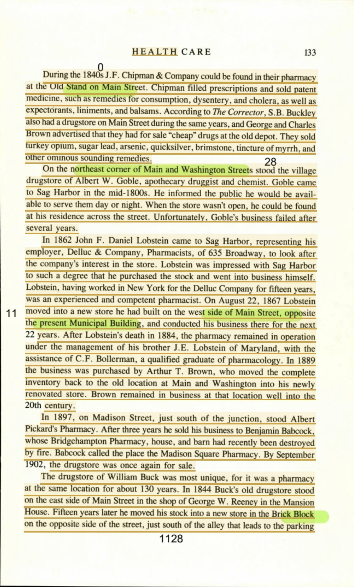
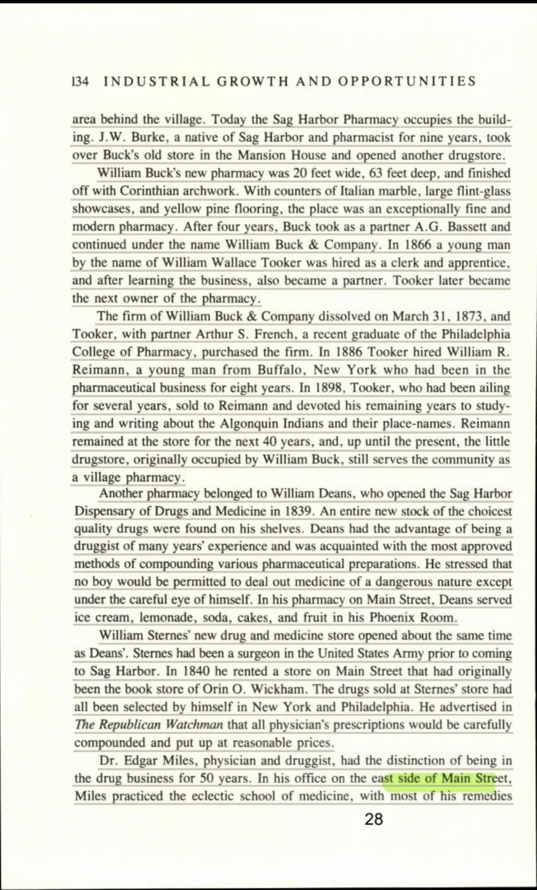
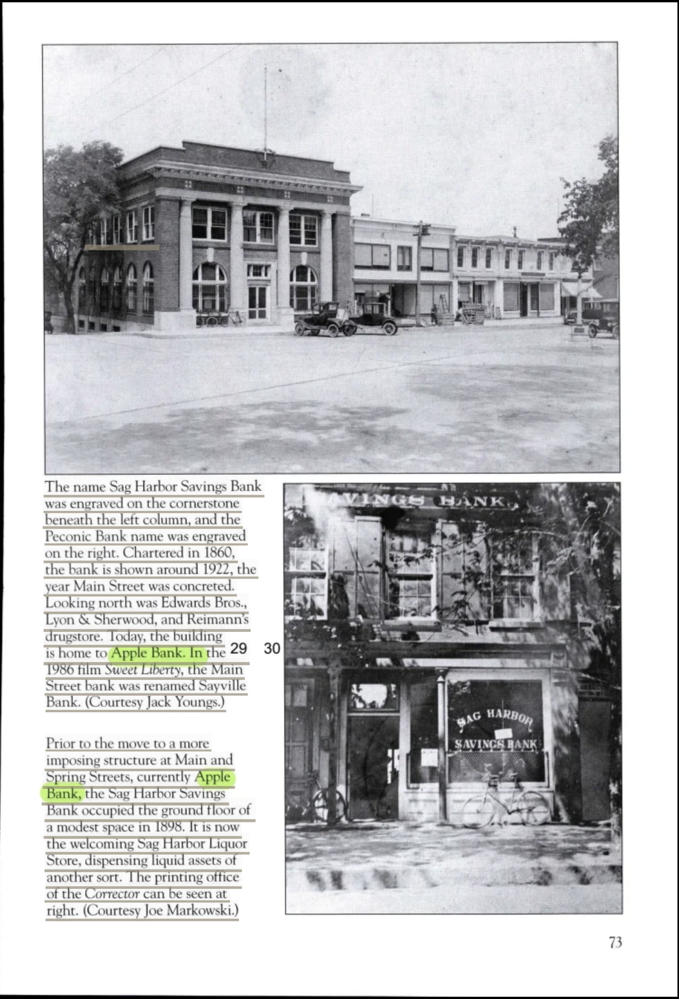

One hundred and thirty years of apothecaries on Main Street
Every previously italicized phrase is highlighted and colour-coded by source. Where the source page is on file, clicking the highlight opens the scan.
Among the establishments that have lent character to Sag Harbor's Main Street, scarcely one can boast a genealogy so extraordinary as the village pharmacy. In a maritime settlement whose fabric was perennially subject to fire and the attrition of nineteenth-century enterprise, this solitary establishment persists as a rare monument to continuity. The historian, sensible of its longevity, sets it apart from the transient enterprises around it, pronouncing without reservation that The drugstore of William Buck was most unique; and indeed, it is precisely because it was most unique that she dwells upon it at such length. The rationale she offers in vindication of so categorical a judgment is at once disarmingly plain and genuinely confounding—namely, that it was a pharmacy at the same location for about 130 years. That a single business should endure at the same location for about 130 years is a circumstance that few commercial undertakings in the whole annals of the American small town, and fewer still within the circumscribed horizons of so diminutive a village, can hope to rival.
The inception of the enterprise, it bears emphasizing, was not consummated at the address with which posterity would forever identify it, but rather upon the facing margin of the same thoroughfare. In the middle decades of the nineteenth century, In 1844 Buck's old drugstore stood on the east side of Main Street in the shop of George W. Reeney in the Mansion House. The reference to Buck's old drugstore as having stood on the east side of Main Street situates the enterprise firmly within the bustling heart of the commercial district, lodged in the shop of George W. Reeney in the Mansion House. That original accommodation would, in the retrospective logic of the chronicle, amount to little more than a prelude. Only upon the lapse of an interval of years did the proprietor pursue quarters befitting his aspirations, for Fifteen years later he moved his stock into a new store in the Brick Block on the opposite side of the street. The removal of his stock into a new store in the Brick Block brought him to a position the chronicler fixes with an almost surveyor's exactitude as reposing just south of the alley that leads to the parking area behind the village. It is upon the improbable persistence of this very edifice into the present age that the entire import of the narrative finally hinges, inasmuch as Today the Sag Harbor Pharmacy occupies the building. The simple declaration that Today the Sag Harbor Pharmacy occupies the building is the very keystone upon which the whole arch of this history rests.
The vacuum created by this relocation did not remain long untenanted, for in that epoch the apothecary's calling carried with it both social esteem and no inconsiderable pecuniary reward. A local man of the craft presently advanced to lay claim to the forsaken premises: J.W. Burke, a native of Sag Harbor and pharmacist for nine years, took over Buck's old store in the Mansion House and opened another drugstore. In this manner Burke—a native of Sag Harbor and already well-seasoned as a pharmacist for nine years—ensured that, having took over Buck's old store in the Mansion House, even the vacated chambers should continue, without the faintest interruption, in the service of the medicinal arts, for he promptly opened another drugstore.
The newly appointed premises into which Buck had conveyed his inventory constituted, by every architectural and commercial canon then in currency, an exemplar of refinement. Its dimensions were at once liberal and discerningly apportioned, for William Buck's new pharmacy was 20 feet wide, 63 feet deep, and finished off with Corinthian arch work. To measure 20 feet wide, 63 feet deep was itself a mark of consequence, and the fact that it was finished off with Corinthian arch work invested the interior with a gravitas drawn directly from the vocabulary of the antique orders. No parsimony appears to have presided over its further embellishment: With counters of Italian marble, large flint-glass showcases, and yellow pine flooring, the place was an exceptionally fine and modern pharmacy. The felicitous union of counters of Italian marble with large flint-glass showcases and the lustrous breadth of yellow pine flooring conspired to realize what the chronicler, dispensing with all qualification, declared an exceptionally fine and modern pharmacy—an aesthetic cosmopolitanism altogether singular in a village of such circumscribed proportions.
The guardianship of the establishment would, across the ensuing decades, be transmitted through an orderly succession of able and enterprising proprietors, each in his turn fortifying the renown entrusted to him by his predecessor. The inaugural transformation of its governance was effected through the instrument of partnership, for After four years, Buck took as a partner A.G. Bassett and continued under the name William Buck & Company. It was only After four years that Buck took as a partner A.G. Bassett, and beneath the commercial style of William Buck & Company the concern would shortly attract into its orbit a personage whose ultimate distinction would transcend, by an immeasurable margin, the narrow precincts of the pharmaceutical profession, when In 1866 a young man by the name of William Wallace Tooker was hired as a clerk and apprentice, and who, after learning the business, also became a partner. The elevation of this young man by the name of William Wallace Tooker, enrolled in the modest station of a clerk and apprentice, proved at once measured and consummate, for only after learning the business did he rise, and in time Tooker later became the next owner of the pharmacy.
The formal devolution of proprietorship was solemnized by the dissolution of the venerable partnership and the accession of fresh, academically sanctioned proficiency. The chronicler preserves the precise date with an archivist's fidelity, recording that The firm of William Buck & Company dissolved on March 31, 1873, and that in its room Tooker, with partner Arthur S. French, a recent graduate of the Philadelphia College of Pharmacy, purchased the firm. That the firm should have dissolved on March 31, 1873 marked a watershed, and the entrance of French—described as a recent graduate of the Philadelphia College of Pharmacy—attests eloquently to the discipline's gradual passage from inherited custom toward formal institutional credentialing. Tooker, forever attentive to the cultivation of accomplished assistance, would in due course enlist into the house the very individual destined to preside over its most sustained and distinguished epoch, for In 1886 Tooker hired William R. Reimann, a young man from Buffalo, New York who had been in the pharmaceutical business for eight years. This young man from Buffalo, New York, already tempered by the seasoning of one who had been in the pharmaceutical business for eight years, was by no measure an untested novice.
The conveyance of authority from Tooker to Reimann was precipitated at once by the infirmity that progressively enfeebled the former and by the increasingly rarefied scholarly preoccupations that laid claim to his intellect, for In 1898, Tooker, who had been ailing for several years, sold to Reimann. Having been ailing for several years, Tooker at last sold to Reimann and thereafter devoted his remaining years to studying and writing about the Algonquin Indians and their placenames. That a provincial dispenser of remedies should consecrate the whole of his remaining years to so recondite and antiquarian a labor as studying and writing about the Algonquin Indians and their placenames numbers among the most touching and improbable felicities the record bequeaths to us. Under Reimann, by contrast, the pharmacy attained its most imperturbable season of stability, and his long incumbency furnishes the very consummation of the institution's fabled permanence: Reimann remained at the store for the next 40 years, and, as the author affirms with manifest gratification, up until the present, the little drugstore, originally occupied by William Buck, still serves the community as a village pharmacy. That Reimann should have remained at the store for the next 40 years is itself remarkable; that evocative turn of phrase—the little drugstore, originally occupied by William Buck—draws the entire unbroken succession into a single, luminous thread of collective memory, for it still serves the community as a village pharmacy.
So eminent did Reimann's drugstore grow within the commercial topography of the village that it survived as an acknowledged fixture in any reckoning of Main Street's northward prospect, wherein the discerning observer might note, in measured sequence, Looking north was Edwards Bros., Lyon & Sherwood, and Reimann's drugstore. To discover that, Looking north, one passed Edwards Bros., Lyon & Sherwood, and Reimann's drugstore in turn is itself an eloquent testimonial to the fixed and unassailable place that Reimann's drugstore occupied within the civic streetscape. Thus did a single unpretentious storefront—borne in turn through the hands of Buck, Bassett, Tooker, French, and Reimann—come to incarnate a continuity at once uncommon and enviable: a village pharmacy that, across an expanse of well beyond a century, never for a solitary moment abandoned the ministration of the community it had ever claimed as its own.
Every highlighted quote, in order of appearance, correlated to its underlying source. The swatch matches the highlight colour in the text.
| # | Verbatim Quote (abbreviated) | Source (Author, Title, Year, Page) |
|---|---|---|
| 1 | “The drugstore of William Buck was most unique” | Zaykowski, Sag Harbor: The Story of an American Beauty, 1991, p. 133 [page scan] |
| 2 | “most unique” | Zaykowski, Sag Harbor: The Story of an American Beauty, 1991, p. 133 [page scan] |
| 3 | “it was a pharmacy at the same location for about 130 years.” | Zaykowski, Sag Harbor: The Story of an American Beauty, 1991, p. 133 [page scan] |
| 4 | “at the same location for about 130 years” | Zaykowski, Sag Harbor: The Story of an American Beauty, 1991, p. 133 [page scan] |
| # | Verbatim Quote (abbreviated) | Source (Author, Title, Year, Page) |
|---|---|---|
| 5 | “In 1844 Buck's old drugstore stood on the east side of Main Street in the shop of George W. Reeney in the Mansion House.” | Zaykowski, Sag Harbor: The Story of an American Beauty, 1991, p. 133 [page scan] |
| 6 | “Buck's old drugstore” | Zaykowski, Sag Harbor: The Story of an American Beauty, 1991, p. 133 [page scan] |
| 7 | “stood on the east side of Main Street” | Zaykowski, Sag Harbor: The Story of an American Beauty, 1991, p. 133 [page scan] |
| 8 | “in the shop of George W. Reeney in the Mansion House.” | Zaykowski, Sag Harbor: The Story of an American Beauty, 1991, p. 133 [page scan] |
| 9 | “Fifteen years later he moved his stock into a new store in the Brick Block on the opposite side of the street.” | Zaykowski, Sag Harbor: The Story of an American Beauty, 1991, p. 133 [page scan] |
| 10 | “his stock into a new store in the Brick Block” | Zaykowski, Sag Harbor: The Story of an American Beauty, 1991, p. 133 [page scan] |
| 11 | “just south of the alley that leads to the parking area behind the village.” | Zaykowski, Sag Harbor: The Story of an American Beauty, 1991, p. 133 |
| 12 | “Today the Sag Harbor Pharmacy occupies the building.” | Zaykowski, Sag Harbor: The Story of an American Beauty, 1991, p. 134 [page scan] |
| 13 | “Today the Sag Harbor Pharmacy occupies the building” | Zaykowski, Sag Harbor: The Story of an American Beauty, 1991, p. 134 [page scan] |
| # | Verbatim Quote (abbreviated) | Source (Author, Title, Year, Page) |
|---|---|---|
| 14 | “J.W. Burke, a native of Sag Harbor and pharmacist for nine years, took over Buck's old store in the Mansion House and opened another drugstore.” | Zaykowski, Sag Harbor: The Story of an American Beauty, 1991, p. 134 [page scan] |
| 15 | “native of Sag Harbor” | Zaykowski, Sag Harbor: The Story of an American Beauty, 1991, p. 134 [page scan] |
| 16 | “pharmacist for nine years” | Zaykowski, Sag Harbor: The Story of an American Beauty, 1991, p. 134 [page scan] |
| 17 | “took over Buck's old store in the Mansion House” | Zaykowski, Sag Harbor: The Story of an American Beauty, 1991, p. 134 [page scan] |
| 18 | “opened another drugstore.” | Zaykowski, Sag Harbor: The Story of an American Beauty, 1991, p. 134 [page scan] |
| # | Verbatim Quote (abbreviated) | Source (Author, Title, Year, Page) |
|---|---|---|
| 19 | “William Buck's new pharmacy was 20 feet wide, 63 feet deep, and finished off with Corinthian arch work.” | Zaykowski, Sag Harbor: The Story of an American Beauty, 1991, p. 134 [page scan] |
| 20 | “20 feet wide, 63 feet deep” | Zaykowski, Sag Harbor: The Story of an American Beauty, 1991, p. 134 [page scan] |
| 21 | “finished off with Corinthian arch work” | Zaykowski, Sag Harbor: The Story of an American Beauty, 1991, p. 134 [page scan] |
| 22 | “With counters of Italian marble, large flint-glass showcases, and yellow pine flooring, the place was an exceptionally fine and modern pharmacy.” | Zaykowski, Sag Harbor: The Story of an American Beauty, 1991, p. 134 [page scan] |
| 23 | “counters of Italian marble” | Zaykowski, Sag Harbor: The Story of an American Beauty, 1991, p. 134 [page scan] |
| 24 | “large flint-glass showcases” | Zaykowski, Sag Harbor: The Story of an American Beauty, 1991, p. 134 [page scan] |
| 25 | “yellow pine flooring” | Zaykowski, Sag Harbor: The Story of an American Beauty, 1991, p. 134 [page scan] |
| 26 | “an exceptionally fine and modern pharmacy” | Zaykowski, Sag Harbor: The Story of an American Beauty, 1991, p. 134 [page scan] |
| # | Verbatim Quote (abbreviated) | Source (Author, Title, Year, Page) |
|---|---|---|
| 27 | “After four years, Buck took as a partner A.G. Bassett and continued under the name William Buck & Company.” | Zaykowski, Sag Harbor: The Story of an American Beauty, 1991, p. 134 [page scan] |
| 28 | “After four years” | Zaykowski, Sag Harbor: The Story of an American Beauty, 1991, p. 134 [page scan] |
| 29 | “took as a partner A.G. Bassett” | Zaykowski, Sag Harbor: The Story of an American Beauty, 1991, p. 134 [page scan] |
| 30 | “William Buck & Company” | Zaykowski, Sag Harbor: The Story of an American Beauty, 1991, p. 134 [page scan] |
| 31 | “In 1866 a young man by the name of William Wallace Tooker was hired as a clerk and apprentice” | Zaykowski, Sag Harbor: The Story of an American Beauty, 1991, p. 134 [page scan] |
| 32 | “after learning the business, also became a partner.” | Zaykowski, Sag Harbor: The Story of an American Beauty, 1991, p. 134 [page scan] |
| 33 | “young man by the name of William Wallace Tooker” | Zaykowski, Sag Harbor: The Story of an American Beauty, 1991, p. 134 [page scan] |
| 34 | “a clerk and apprentice” | Zaykowski, Sag Harbor: The Story of an American Beauty, 1991, p. 134 [page scan] |
| 35 | “after learning the business” | Zaykowski, Sag Harbor: The Story of an American Beauty, 1991, p. 134 [page scan] |
| 36 | “Tooker later became the next owner of the pharmacy.” | Zaykowski, Sag Harbor: The Story of an American Beauty, 1991, p. 134 [page scan] |
| # | Verbatim Quote (abbreviated) | Source (Author, Title, Year, Page) |
|---|---|---|
| 37 | “The firm of William Buck & Company dissolved on March 31, 1873” | Zaykowski, Sag Harbor: The Story of an American Beauty, 1991, p. 134 [page scan] |
| 38 | “Tooker, with partner Arthur S. French, a recent graduate of the Philadelphia College of Pharmacy, purchased the firm.” | Zaykowski, Sag Harbor: The Story of an American Beauty, 1991, p. 134 [page scan] |
| 39 | “dissolved on March 31, 1873” | Zaykowski, Sag Harbor: The Story of an American Beauty, 1991, p. 134 [page scan] |
| 40 | “a recent graduate of the Philadelphia College of Pharmacy” | Zaykowski, Sag Harbor: The Story of an American Beauty, 1991, p. 134 [page scan] |
| 41 | “In 1886 Tooker hired William R. Reimann, a young man from Buffalo, New York who had been in the pharmaceutical business for eight years.” | Zaykowski, Sag Harbor: The Story of an American Beauty, 1991, p. 134 [page scan] |
| 42 | “young man from Buffalo, New York” | Zaykowski, Sag Harbor: The Story of an American Beauty, 1991, p. 134 [page scan] |
| 43 | “who had been in the pharmaceutical business for eight years” | Zaykowski, Sag Harbor: The Story of an American Beauty, 1991, p. 134 [page scan] |
| # | Verbatim Quote (abbreviated) | Source (Author, Title, Year, Page) |
|---|---|---|
| 44 | “In 1898, Tooker, who had been ailing for several years, sold to Reimann.” | Zaykowski, Sag Harbor: The Story of an American Beauty, 1991, p. 134 [page scan] |
| 45 | “been ailing for several years” | Zaykowski, Sag Harbor: The Story of an American Beauty, 1991, p. 134 [page scan] |
| 46 | “sold to Reimann” | Zaykowski, Sag Harbor: The Story of an American Beauty, 1991, p. 134 [page scan] |
| 47 | “devoted his remaining years to studying and writing about the Algonquin Indians and their placenames.” | Zaykowski, Sag Harbor: The Story of an American Beauty, 1991, p. 134 [page scan] |
| 48 | “remaining years” | Zaykowski, Sag Harbor: The Story of an American Beauty, 1991, p. 134 [page scan] |
| 49 | “studying and writing about the Algonquin Indians and their placenames” | Zaykowski, Sag Harbor: The Story of an American Beauty, 1991, p. 134 [page scan] |
| 50 | “Reimann remained at the store for the next 40 years” | Zaykowski, Sag Harbor: The Story of an American Beauty, 1991, p. 134 [page scan] |
| 51 | “up until the present, the little drugstore, originally occupied by William Buck, still serves the community as a village pharmacy.” | Zaykowski, Sag Harbor: The Story of an American Beauty, 1991, p. 134 [page scan] |
| 52 | “remained at the store for the next 40 years” | Zaykowski, Sag Harbor: The Story of an American Beauty, 1991, p. 134 [page scan] |
| 53 | “the little drugstore, originally occupied by William Buck” | Zaykowski, Sag Harbor: The Story of an American Beauty, 1991, p. 134 [page scan] |
| 54 | “still serves the community as a village pharmacy.” | Zaykowski, Sag Harbor: The Story of an American Beauty, 1991, p. 134 [page scan] |
| # | Verbatim Quote (abbreviated) | Source (Author, Title, Year, Page) |
|---|---|---|
| 55 | “Looking north was Edwards Bros., Lyon & Sherwood, and Reimann's drugstore.” | Roth, Images of America Sag Harbor, 2018, p. 73 [page scan] |
| 56 | “Looking north” | Roth, Images of America Sag Harbor, 2018, p. 73 [page scan] |
| 57 | “Edwards Bros., Lyon & Sherwood, and Reimann's drugstore” | Roth, Images of America Sag Harbor, 2018, p. 73 [page scan] |
| 58 | “Reimann's drugstore” | Roth, Images of America Sag Harbor, 2018, p. 73 [page scan] |
3 scanned pages, one per cited source page. Each lists the highlighted quotes drawn from it.
Quotes drawn from this page: 1 2 3 4 5 6 7 8 9 10
Ten quotes are printed here. The page turns mid-sentence: this leaf ends 'just south of the alley that leads to the parking' and p. 134 opens 'area behind the village.' Quote 11 spans the two, so it is not linked to either; both leaves are on file and can be read side by side from here.

Quotes drawn from this page: 12 13 14 15 16 17 18 19 20 21 22 23 24 25 26 27 28 29 30 31 32 33 34 35 36 37 38 39 40 41 42 43 44 45 46 47 48 49 50 51 52 53 54
Forty-three quotes are printed here — the whole succession from Burke through Bassett, Tooker, French and Reimann. The citation chart assigned all fifty-four Zaykowski quotes to p. 133; the scans show the break falls after the eleventh, and the chart in this document has been corrected to the leaves the quotes are actually printed on.

Quotes drawn from this page: 55 56 57 58
All four quotes drawn from this work are printed here, in the caption to the Sag Harbor Savings Bank photograph.
